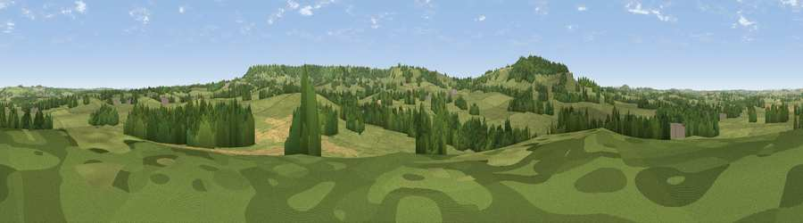

Viewpoint near Chetnole
#29986 in England · top 69% of its area beats it · near ChetnoleThe view, rendered

A 360° render of this exact spot computed from the terrain model, tree cover and land cover — summer colours, afternoon light, calibrated against photographs of famous viewpoints. Real trees, hedges and buildings will differ in detail.
The panorama
Grey silhouette: terrain skyline in each direction (720 bearings, Earth curvature and refraction included). Dashed green: skyline with trees (+15 m) and buildings (+8 m) as obstacles. Blue strip: how far the ground is visible on each bearing.
Where the view opens
Wedge length = distance to the farthest visible ground on that bearing (vegetation-aware). Rings at 10, 25 and 50 km.
What fills the view
73% grassland · 19% woodland · 7% cropland ·
Angular shares of the visible panorama (visual magnitude), not map area. Landscape diversity 0.33 (0–1 Shannon).
Key numbers
More beautiful places nearby
The staircase of upgrades: each row has a higher view potential than everything closer. Driving times are estimates from straight-line distance, calibrated against real road routing — check an actual route before setting out.
| Place | Direction | Drive | Score |
|---|---|---|---|
| Viewpoint near Chetnole | WSW · 2 km | ~6 min | 67.4 |
| Viewpoint near Hilfield | ESE · 4 km | ~9 min | 71.6 |
| Viewpoint near North Poorton | SW · 12 km | ~22 min | 75.4 |
| Viewpoint near North Poorton | SW · 12 km | ~23 min | 77.0 |
| Viewpoint near Nettlecombe | SSW · 14 km | ~26 min | 79.3 |
| Viewpoint near Askerswell | SSW · 14 km | ~26 min | 81.7 |
| Lewesdon Hill | WSW · 18 km | ~31 min | 83.3 |
| The Knoll | SSW · 21 km | ~35 min | 91.0 |
50.86231, -2.55445 · source: screening · position refined by local search. Computed location — check access rights before visiting.